Note
Hello, welcome to the SunFounder Raspberry Pi & Arduino & ESP32 Enthusiasts Community on Facebook! Dive deeper into Raspberry Pi, Arduino, and ESP32 with fellow enthusiasts.
Why Join?
Expert Support: Solve post-sale issues and technical challenges with help from our community and team.
Learn & Share: Exchange tips and tutorials to enhance your skills.
Exclusive Previews: Get early access to new product announcements and sneak peeks.
Special Discounts: Enjoy exclusive discounts on our newest products.
Festive Promotions and Giveaways: Take part in giveaways and holiday promotions.
👉 Ready to explore and create with us? Click [here] and join today!
Flame Alert System with Blynk
In this chapter, we will guide you through the process of creating a home flame alarm system demo using Blynk. By utilizing a flame sensor, you can detect potential fires in your home. Sending the detected values to Blynk allows for remote monitoring of your home via the internet. In case of a fire, Blynk will promptly notify you via email.
1. Build the Circuit
Note
The ESP8266 module requires a high current to provide a stable operating environment, so make sure the 9V battery is plugged in.

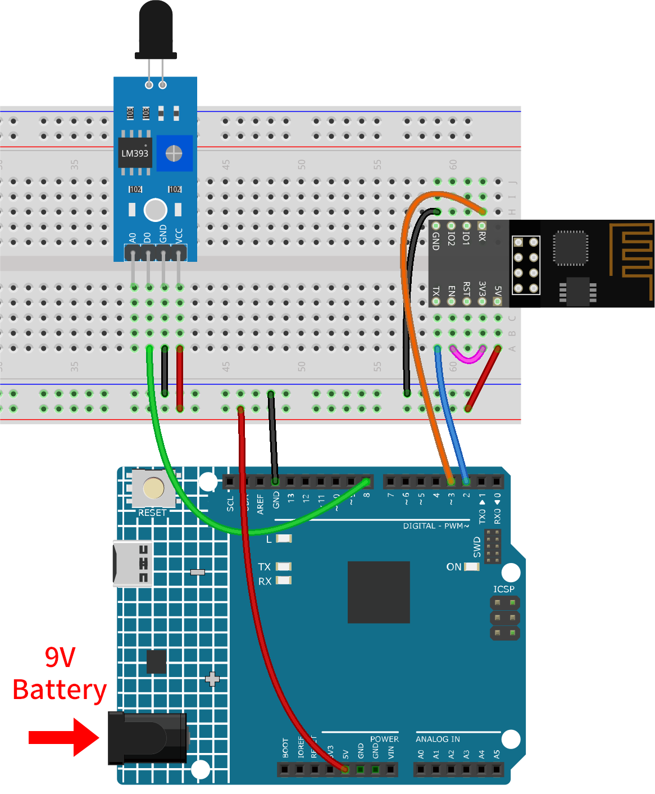
2. Configure Blynk
2.1 Create template
Firstly, we need to establish a template on Blynk. Follow the steps below to create a “Flame Alert System” template.

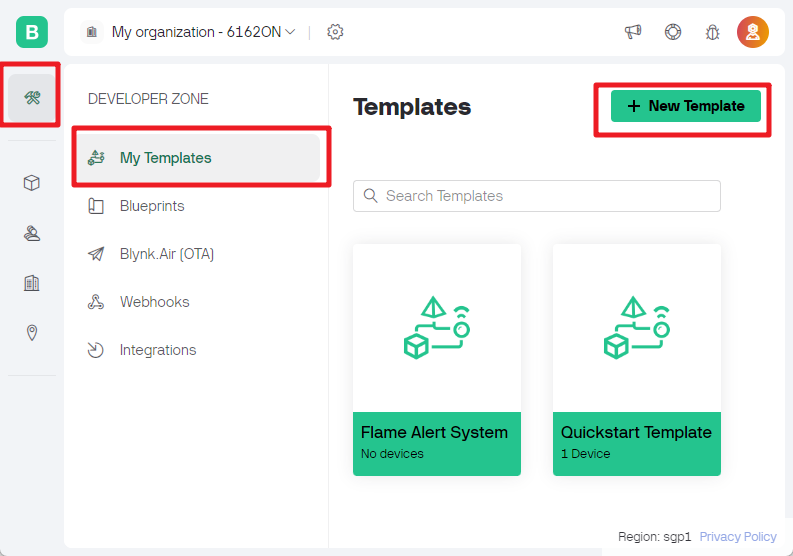
Ensure that the HARDWARE is configured as ESP8266 and the CONNECT TYPE is set to WiFi.

2.2 Datastream
Create a Datastream of type Virtual Pin in the Datastream page to get the value of Flame sensor module.
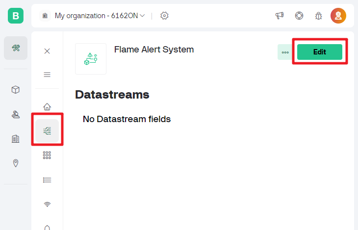
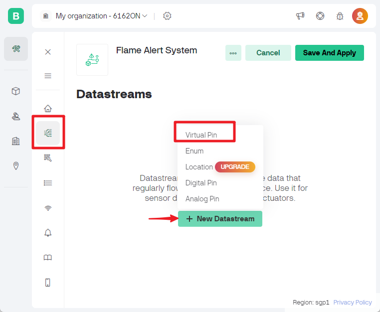
Set the name of the Virtual Pin to flame_sensor_value. Set the DATA TYPE to Integer and MIN and MAX to 0 and 1.

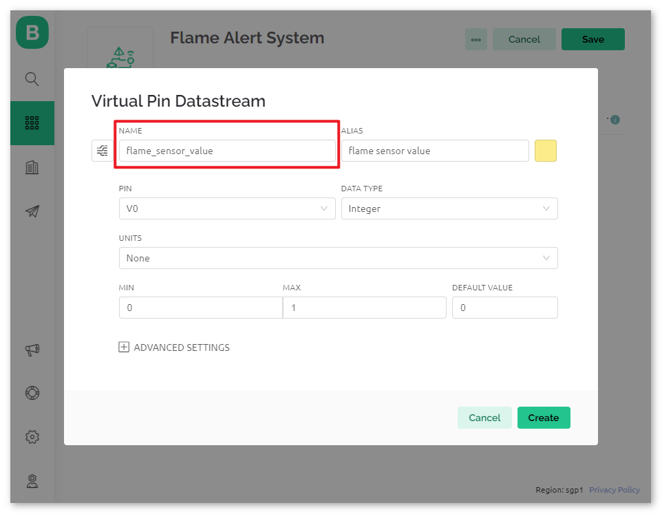
2.3 Event
Next, we will create an event that logs the detection of flames and sends an email notification.

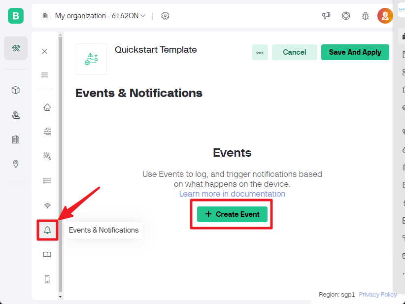
Note
It is recommended to keep it consistent with my settings, otherwise you may need to modify the code to run the project.
Set EVENT NAME to flame_detection_alert. At the same time, you can customize the content of email sent by setting DESCRIPTION for event triggering. You can also set frequency limits for event triggering below.

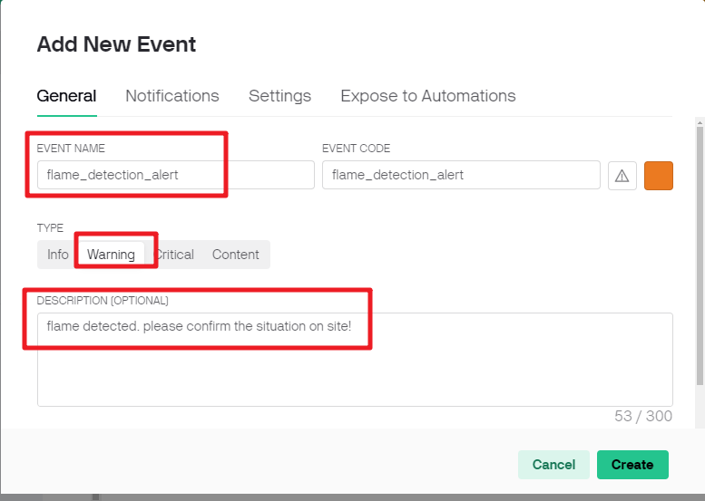
Go to the Notifications page and configure email settings.

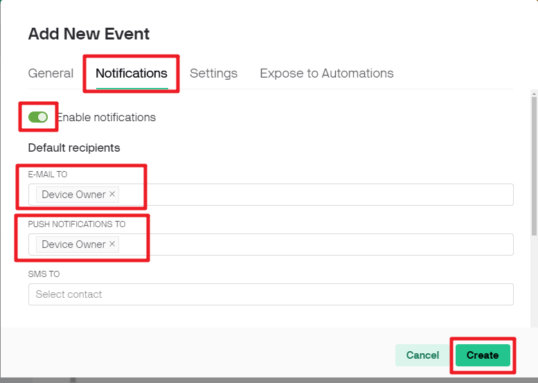
2.4 Web Dashboard
We also need to set up the Web Dashboard to display the sensor data sent from the Uno board.
Drag and drop an Label widget on the Web Dashboard page.

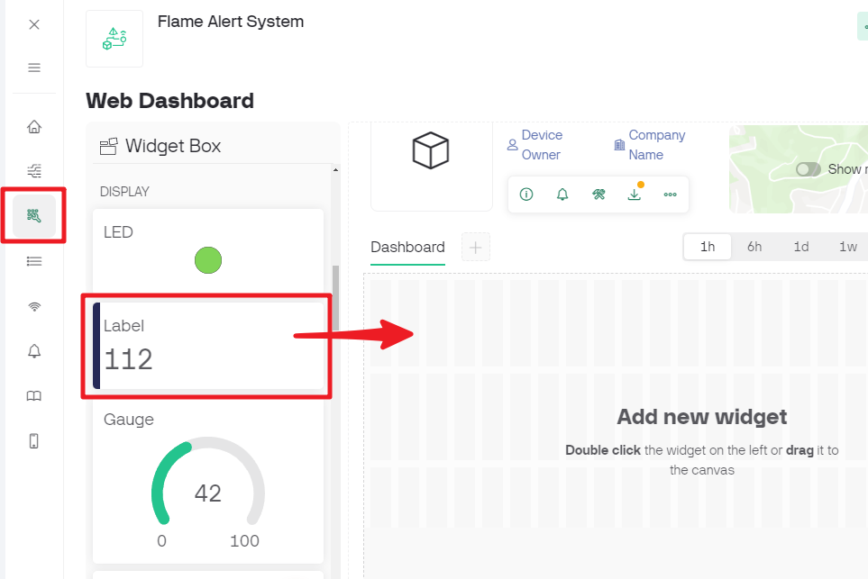
In the settings page of the Label widget, select Datastream as flame_sensor_value(V0). Then set the color of WIDGET BACKGROUND to change with the value of data. When the displayed value is 1, it will be shown in green. When the value is 0, it will be shown in red.

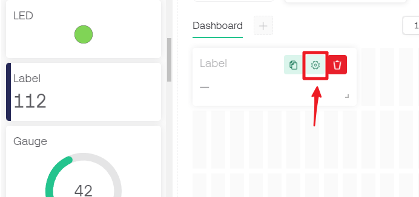

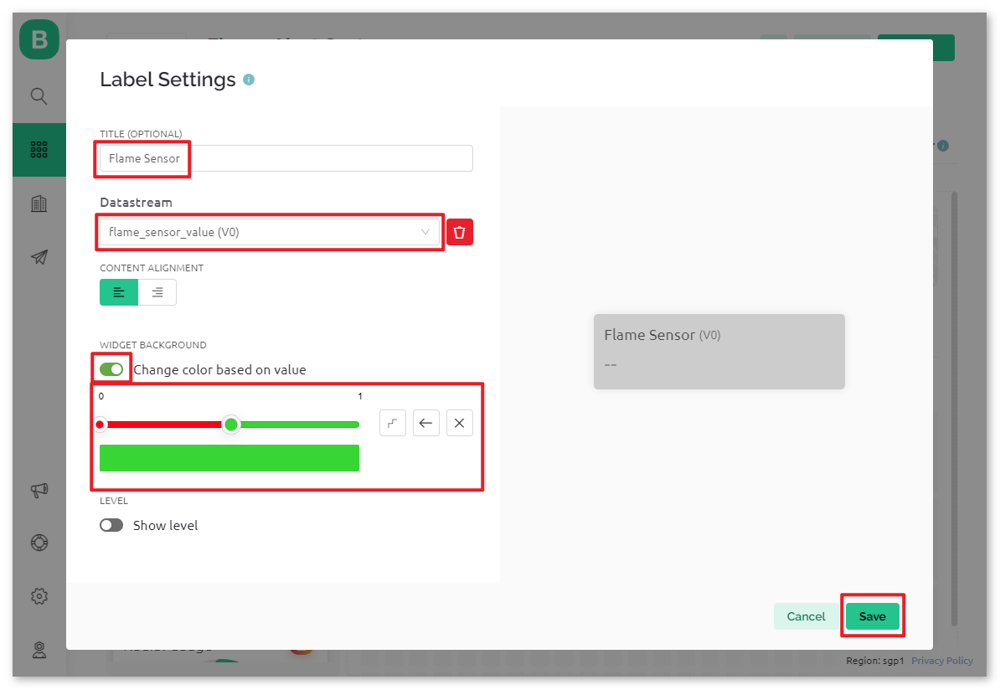
2.5 Save template
At last, remember to save the template.

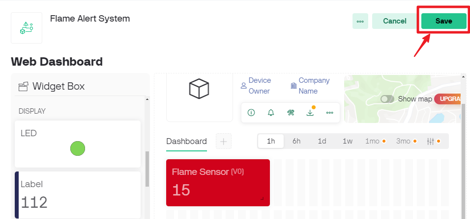
In case you need to edit the template, you can click on the edit button in the upper right corner.

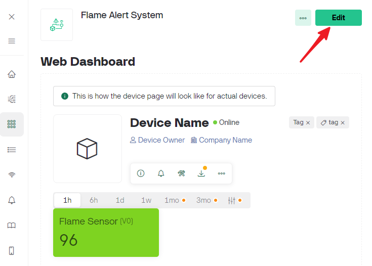
3. Run the Code
Open the
01-Flame_alert_system.inofile under the path ofultimate-sensor-kit\code\iot_project_esp01\wifi\01-Flame_alert_system, or copy this code into Arduino IDE.Create a Blynk device using the Flame Detection Alert template. Then, replace the
BLYNK_TEMPLATE_ID,BLYNK_TEMPLATE_NAME, andBLYNK_AUTH_TOKENwith your own.#define BLYNK_TEMPLATE_ID "TMPxxxxxxx" #define BLYNK_TEMPLATE_NAME "Flame Alert System" #define BLYNK_AUTH_TOKEN "xxxxxxxxxxxxx"
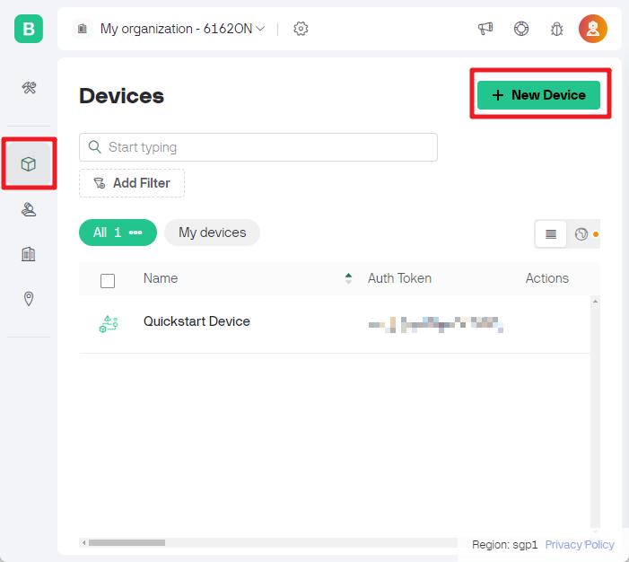
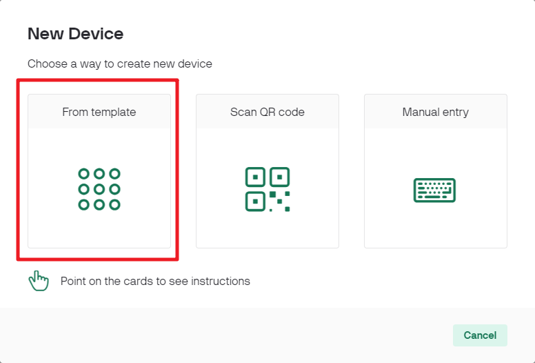
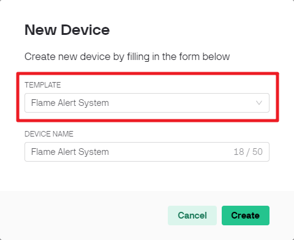
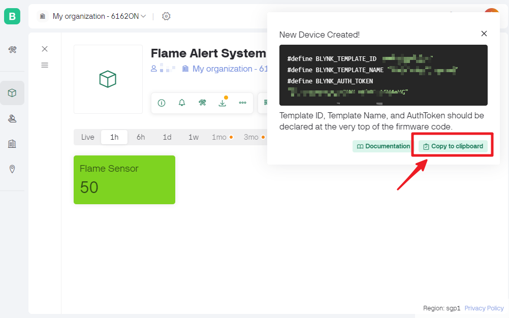
You also need to enter the
ssidandpasswordof the WiFi you are using.char ssid[] = "your_ssid"; char pass[] = "your_password";
After selecting the correct board and port, click the Upload button.
Open the Serial monitor(set baudrate to 115200) and wait for a prompt such as a successful connection to appear.

Note
If the message
ESP is not respondingappears when you connect, please follow these steps.Make sure the 9V battery is plugged in.
Reset the ESP8266 module by connecting the pin RST to GND for 1 second, then unplug it.
Press the reset button on the R4 board.
Sometimes, you may need to repeat the above operation 3-5 times, please be patient.
Now, Blynk will show the data read from flame sensor. In the label widget, you can see the value read by the flame sensor. When the displayed value is 1, the background of the label will be shown in green. When the value is 0, the background of the label will be shown in red and Blynk will send you an alert email.
If you want to use Blynk on mobile devices, please refer to How to use Blynk on mobile device?.


4. Code explanation
Library Initialization
Before we start, it’s crucial to set up the necessary libraries and settings for communication between the Arduino, ESP8266 WiFi module, and Blynk app. This code sets up the required libraries and configures a software serial connection between the Arduino and ESP8266 module, with the appropriate baud rate for data transmission.
//Set debug prints on Serial Monitor #define BLYNK_PRINT Serial #include <ESP8266_Lib.h> // Library for ESP8266 #include <BlynkSimpleShieldEsp8266.h> // Library for Blynk // Software Serial on Uno #include <SoftwareSerial.h> SoftwareSerial EspSerial(2, 3); // RX, TX #define ESP8266_BAUD 115200 // Set the ESP8266 baud rate ESP8266 wifi(&EspSerial);
Blynk and WiFi configuration
For the project to communicate with the Blynk app, it needs to connect to a Wi-Fi network. The credentials need to specified here.
// Template ID, Device Name and Auth Token are provided by the Blynk Cloud // See the Device Info tab, or Template settings #define BLYNK_TEMPLATE_ID "TMPxxxxxx" #define BLYNK_TEMPLATE_NAME "Flame Alert System" #define BLYNK_AUTH_TOKEN "xxxxxxxxxxxxxxx" // Your WiFi credentials. // Set password to "" for open networks. char ssid[] = "your_ssid"; char pass[] = "your_password";
Sensor Pin & Timer Declaration
Define the pin number for the flame. Blynk library provides a built-in timer, and we create a timer object. More about Why we use Blynk timer?
const int sensorPin = 8; BlynkTimer timer;
setup() Function
Initial configurations such as setting the pin mode for the sensorPin, initiating serial communication, setting the BlynkTimer, and connecting to the Blynk app are done in this function.
We use
timer.setInterval(1000L, myTimerEvent)to set the timer interval in setup(), here we set to execute themyTimerEvent()function every 1000ms. You can modify the first parameter oftimer.setInterval(1000L, myTimerEvent)to change the interval betweenmyTimerEventexecutions.
void setup() { pinMode(sensorPin, INPUT); Serial.begin(115200); EspSerial.begin(ESP8266_BAUD); delay(1000); timer.setInterval(1000L, myTimerEvent); Blynk.config(wifi,BLYNK_AUTH_TOKEN); Blynk.connectWiFi(ssid, pass); }
loop() Function
The main loop runs the Blynk and Timer services continuously.
void loop() { Blynk.run(); timer.run(); }
myTimerEvent() & sendData() Function
void myTimerEvent() { // Please don't send more that 10 values per second. sendData(); // Call function to send sensor data to Blynk app }
The
sendData()function reads the value from the flame sensor and sends it to Blynk. If it detects a flame (value 0), it sendsflame_detection_alertevent to the Blynk app.Use
Blynk.virtualWrite(vPin, value)to send data to virtual pin V0 on Blynk. More about Blynk.virtualWrite() .Use
Blynk.logEvent("event_code")to log event to Blynk. More about Blynk.logEvent() .
void sendData() { int data = digitalRead(sensorPin); Blynk.virtualWrite(V0, data); // send data to virtual pin V0 on Blynk Serial.print("flame:"); Serial.println(data); // Print flame status on Serial Monitor if (data == 0) { Blynk.logEvent("flame_alert"); // log flame alert event if sensor detects flame } }
Reference